Welcome to Lab 1
This guide will get you up and running with Ember.js and interacting with Flickr (via a REST API).
Cybersecurity First Principles in this lesson
- Resource Encapsulation - Encapsulation is an object oriented concept where all data and functions required to use the resource are packaged into a single self-contained component. The goal is to only allow access or manipulation of the resource in the way the designer intended. An example, assume a flag pole is the object. There are fixed methods on how the flag pole is to be used. Put the flag on, take the flag off, raise or lower the flag. Nothing else can be done to the flag pole. In this lesson, we will use Ember.js to encapsulate functions and data in our app in components that provide similar well-defined and contained functionalities.
- Abstraction - An abstraction is a representation of an object or concept. The gauges in an automobile are an abstraction of the performance of a car. A map is an abstraction of the earth. Abstraction allows us to model an object without considering all of the (possibly infinite) complexity that the object may contain. In this lesson, we use abstraction to model data structures and functions into distinct abstract concepts (such as a 'photo').
- Modularity - Modular programming is a software design technique that emphasizes separating the functionality of a program into independent, interchangeable modules. Each module contains everything necessary to execute a unique part of the desired functionality through well designed interfaces. These well defined interfaces provide all the detail needed for one module to replace another and achieve the needed results.
- Simplicity of Design - Simplicity allows a person to better understand hardware and software. Without the clutter of unnecessarily complicated code and interfaces, the software will be more understandable by people that will update the code when requirements change. It will be easier to understand by the testers and they will be able to spot problems sooner. By keeping software as simple and as focused as possible, the reliability and security is greatly increased. In this lesson, we make use of well-tested ember framework code to reduce the complexity of basic operations like DOM-replacement and data binding. Not using frameworks like this turns a task that may be 5-10 lines in ember into 100+ lines of code in basic javascript.
The guide is split into 6 subunits. Select a unit below or start from the beginning. Get started
WMWare: Lab Image Information
- Download Link: [click here]
- Username: student
- Password: student
UNIT1: Ember Hello World and App Bootstrapping
1. Start a new ember project
Press ctrl + alt + t to open a new terminal.cd Desktop
sudo chown student -R /home
sudo ember new myprojectThen something like this: 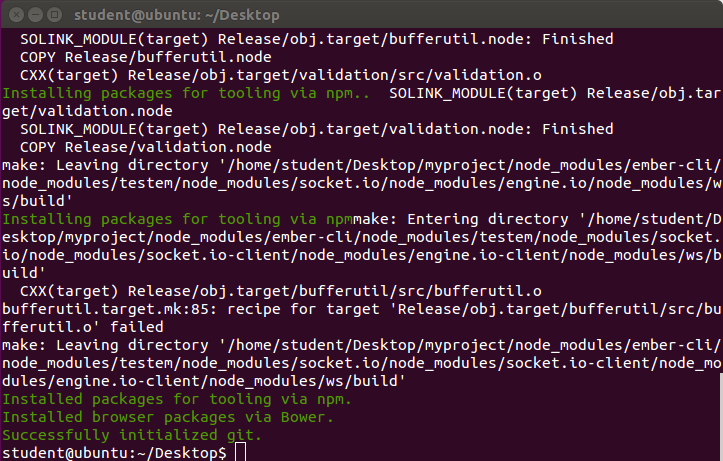
2. Set permissions on the new directory
In the same terminal type:sudo chmod 775 -R myproject/
sudo chown student -R myproject/3. Lets finish the installation and launch our new app
cd myprojectUsing the left hand side menu, open sublime (the black icon with an S on it). Next select file (top left menu) and then click 'open file'.
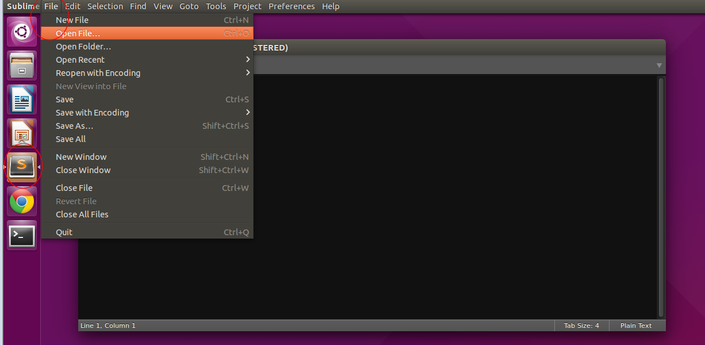
When the prompt opens, navigate to Desktop/myproject and then click bower.json to open it for changes. Change the following lines:
1.
"ember" : "1.12.0""ember" : "1.13.12"2.
"ember-data" : "1.0.0-beta""ember" : "1.13.12"3.
"jquery": "^1.11.1""jquery": "1.11.1"sudo bower install --allow-root
ember server4. At this point you have created your app!
Lets open chrome and see the fruits of your (very small) labor, so far.(in a new chrome tab) Navigate to http://localhost:4200
[or just click here]
If everything is working, you should see a message that says:
"Welcome to Ember.js"
5. Lets run the ember.js tests
(in new chrome tab) Navigate to http://localhost:4200/tests[or just click here]
You should see something like this: 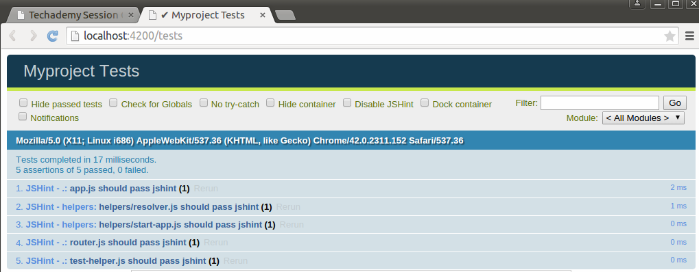
Congratulations! You've created your first ember app.
Ember-cli, being awesome, actually creates a project for you, so all we need to do is add any files that have been changed.
Do the following:
Open a new terminal (type ctrl + t), then issue the following commands:
cd /home/student/Desktop/myproject/
git status
git add -A
git config --global user.email "<your-email>"
git config --global user.name "<your-github-account-username@github.com>"
git commit -m "Initial commit in secwebdev"The first two and last commands are three that you should get very familiar with. They, respectively, show all file changes since the last commit, stages (add or remove) all new, modified, and deleted files for commits, and then finally commits the changes to your local git repository for change tracking. The middle two commands will configure your machine globally with your preferred email and username, so that subsequent commits and pushes will identify you as the person who modified the files. You won't need to use them again unless you want to change your email or username.
Lets go ahead and commit our project to Github.com
Create a github.com account (if you dont have one) https://github.com/
Create a new github repository, after you've signed up: https://github.com/new
Note the name of the new repository that you create on Github.com. We will need it for the command below.
Now do the following in the same terminal as before to push your local repository to github.com
git remote add origin https://github.com/[your github username]/[your github repository name].git
git push -u origin masterMake sure to replace [your github username] and [your github repository name] with their actual values (without the brackets). This will push the commited files tracked in your local repository to your remote repository on github.com. It will also configure your local repository to use the same settings in the future (i.e. pushing to the new branch you just created). This means that in the future you will just need to do an add (git add -A), a commit (git commit -m "msg") and a push (git push) to update your repository and push to github. For a full list of git commands look at http://gitref.org/, some can be used for operating multiple branches in collaborative projects and then merging your work together at various milestone points. If you are not comfortable in the command line, you might also want to consider getting and using a git GUI such as gitg (https://wiki.gnome.org/Apps/Gitg/).
As you go on you should periodically do a git add -A, git commit -m "commit message", and git push origin master to update your github reepository. (after every step is great, but in real projects you should generally make a commit everytime you modify or implement components of your app).
6. A look forward
Get rid of the "/tests" in the URL in your browser [i.e. click here].Notice that your app kind of...sucks... for now.
In this project you're going to work with flickr (the photo hosting app) API and do something cool. We'll do some basics together and then you can expand on it as you see fit.
7. Onward!
Lets start by having you configure your development environment. From the Linux desktop, click the sublime icon on the left side of the screen (A black button with an S in it) At the top of the screen, click project, then "add folder to project," select Desktop then "open" the "myproject" folder created for you by ember when you made your project. This will pin the folder in sublime so you can easily work through the files.If you did everything right you should see something like: 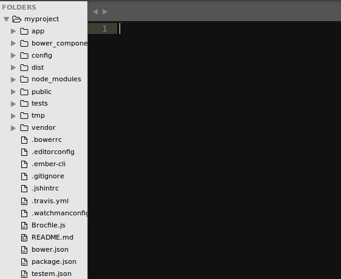
The folder has a lot of stuff in it. The "app" folder is where you will do almost all of your coding. The "bower_components" and "node_modules" folders are where ember installs all of the needed dependencies. "dist" is your build folder which represents your running app. The "config" folder has a file called "environment.js" which is helpful for setting up certain application parameters. The "public" folder allows you to drop in libraries without installing through ember (like css or static javascript files). "tests" contains all of the tests if you want to write unit tests for each of your components. You can largely ignore tmp and vendor. Of the other files in the myproject directory, only the brocfile and bower.json are interesting and they are used for installing new dependencies. Ask if you have questions about them
8. Time to do some coding! Start with a "template"
Ember uses something called "handlebars" that makes HTML cleaner and really awesome. Lets track down where the welcome message on our home page is at and modify it to be cooler. In sublime press ctrl + shift + f to search our entire project space for the welcome message.On the find line type "welcome to ember".
You should see something like: 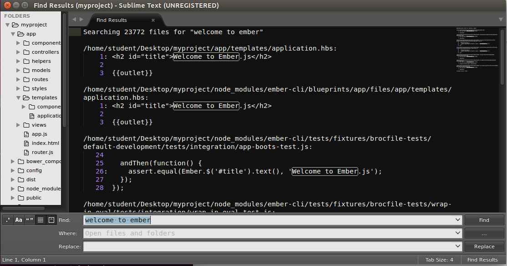
Double click the first line, i.e. application.hbs (a handlebars file), to open the file for editing. This is the template we want to modify.
Lets start by changing the header and adding some logic to display a list of pictures.
Change:
<h2 id="title">Welcome to Ember.js</h2>
{{outlet}}To:
<!-- app/templates/application.hbs -->
<div class="container">
<h2 id="title">Flickr feed:</h2>
<ul>
{{#each photo in photos}}
<li>
{{photo.title}} ({{photo.username}})<br>
<img src="{{photo.url}}" />
</li>
{{/each}}
</ul>
</div>When you save, you should notice that ember (still running in your first terminal) automatically rebuilds your app and reloads the page for you - pretty nifty. Let take a look at the results.
You should see: 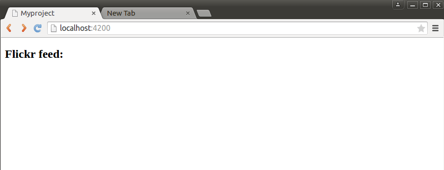
What gives? Where is the list? Where are the photos?
Well...you have only created a template for them, you dont actually have any photos in your "photos" list to display.
Lets change that.
9. Building your first controller.
You will quickly realize that templates only work when we give them some data to work with. For that, you want to use a "controller." In Ember the controller is the brains of the operation.Lets create some mockup data that we can use to test our template.
Switch to a new terminal (ctrl+shift+t) and type the following commands
cd /home/student/Desktop/myproject/
ember generate controller applicationIt should look like: 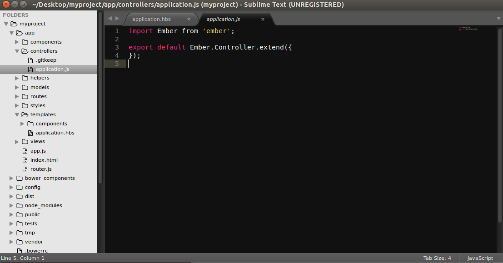
As I mentioned, controllers are the brains of your page. You can define javascript methods in here, interact with data, define handlers to process user actions, and also store data for loading into your templates.
Lets create some javascript objects to implement our "photo" list.
in /home/student/Desktop/myproject/controllers/application.hbs, replace this code:
import Ember from 'ember';
export default Ember.Controller.extend({
});with:
import Ember from 'ember';
var Photo = Ember.Object.extend({
title: '',
username: '',
url: '',
});
var PhotoCollection = Ember.ArrayProxy.extend(Ember.SortableMixin, {
sortProperties: ['title'],
sortAscending: false,
content: [],
});
var testPhotos = PhotoCollection.create();
var testimg1 = Photo.create({
title: "Google logo",
username: "google",
url: "https://www.google.com/images/srpr/logo11w.png"
});
var testimg2 = Photo.create({
title: "UNO logo",
username: "UNO",
url: "http://www.unomaha.edu/_files/images/logo-subsite-o-2.png"
});
var testimg3 = Photo.create({
title: "Facebook Logo",
username: "Facebook",
url: "https://www.facebook.com/images/fb_icon_325x325.png"
});
testPhotos.pushObject(testimg1);
testPhotos.pushObject(testimg2);
testPhotos.pushObject(testimg3);
export default Ember.Controller.extend({
photos: testPhotos
});
Save your controller in sublime (press ctrl+s), and watch the command line where ember server is running to make sure there aren't any errors.
Ok my code works - great, but what does it all mean?
Lets break the code you wrote down.
The first part creates a new object (A type of containing structure like a box) that allows for the creation of several attributes. In this case we have title, username, and url attributes. The title might be a photo title, the username might define who owns the photo, and the url would point to the actual image we want to load.
The next part defines a list Object called a PhotoCollection. A Collection is just a group of objects. In this case our collection extends something called an ArrayProxy (a generic type of list in ember) and uses a mixin called SortableMixin that provides handy features out of the box to do things like sorting your list.
Using these two types of objects, we next create three test photos by instantiaing (i.e. Photo.create) new photo objects called testimg1..3. These new Photo objects are then pushed into our collection using the pushObject keyword. Finally, the last part of our code maps the photos object in the controller namespace to the testPhotos object we just created. This part will allow our template to get the photos object and iterate over it to display all of the objects inside (what we created before in the template).
If you have any errors, try to fix them given the clues in the JSHint (from the command line). Its likely that you may have typoed something.
When I was making the tutorial for instance, I got this error.
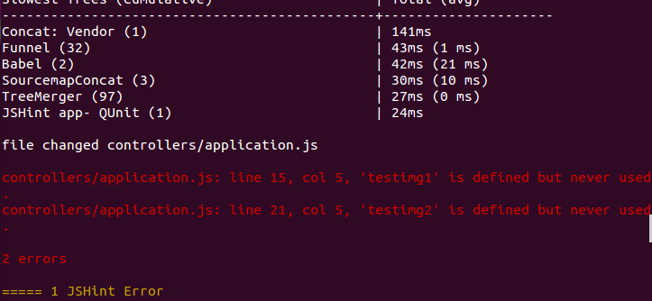
To debug, I checked line 15 and 21, then looked below and realized I was missing the .pushObject part.
When you've resolved any errors, you should see:
10. Our template works now!
Ember seemlessly wired up our controller to our template. Once we introduced data to the controller, our template loaded it and displayed it on the screen. Pretty awesome huh? Lets change the order, to display the titles alphabetically using the SortableMixin.in sublime open the application controller and modify the sortAscending line to look like:
sortAscending: truesave your file (ctrl+s) and watch as ember updates the page to display the titles in order.
Lets also commit our code (A good practice to follow as you develop anything), in one of your open terminal windows,
cd /home/student/Desktop/myproject/
git status
git add -A
git commit -m "end of task 10, created basic flickr page"UNIT2: App Refinement and debugging
11. Adding libraries to your app
At the moment our content looks pretty boring and poorly formatted. Lets spice it up with some CSS. We'll use bootstrap for this project (its pretty widely used). You're probably used to using a bunch of CSS import statements that look like<link rel="stylesheet" href="https://maxcdn.bootstrapcdn.com/bootstrap/3.3.4/css/bootstrap.min.css">While you can of course do this in ember apps, there are libraries that wrap bootstrap into ember-specific components that prevent you from ending up with spaghetti code (having your code look like a pile of noodles).
Ember cli uses something called "addons." In here we're going to use a library called "ember-bootstrap" that very smoothly integrates bootstrap with ember.
To use it all you have to do is stop your ember server terminal (it should be running in one of your terminal screens, press ctrl+c to stop it, then type:
ember install ember-bootstrapvar app = new EmberApp();To:
var app = new EmberApp({
'ember-bootstrap': {
'importBootstrapTheme': true
}
});Now save (ctrl +s) your Brocfile.
This will actually mess up the ember liveReload - which we can easily fix now.
To fix it, do the following. Open the /home/student/Desktop/myproject/.ember-cli file in sublime.
Add two flags so that your file looks like
{
/**
Ember CLI sends analytics information by default. The data is completely
anonymous, but there are times when you might want to disable this behavior.
Setting `disableAnalytics` to true will prevent any data from being sent.
*/
"disableAnalytics": false,
"liveReload": true,
"watcher": "polling"
}Save (ctrl+s). Since you modified your Brocfile, you need to restart the ember server. Go back to the terminal that is running ember server and terminate it by pressing (crtl + c), and then restart ember cli using these commands:
cd /home/student/Desktop/myproject/
ember serverOnce you've done this, you should see that your page is now using some different fonts and has shifted slightly to a centered div. This is because we used the "container" class earlier in our template.
For a full list of bootstrap css components, see http://getbootstrap.com/components/. For a list of ember specific components that come with ember-bootstrap, see http://kaliber5.github.io/ember-bootstrap/components/. We will be using many of them as the app development progresses.
For now, lets style our list template using bootstrap css (see http://getbootstrap.com/components/)
If you look at the link, you will see that bootstrap uses the css class names "list-group" and "list-group-item" to apply styling to the elements. Lets modify our /home/student/Desktop/myproject/app/templates/application.hbs template file to do this.
Open the file in sublime and replace it with the following:
<!-- app/templates/application.hbs -->
<div class="container">
<h2 id="title">Flickr feed:</h2>
<ul class="list-group">
{{#each photo in photos}}
<li class="list-group-item">
{{photo.title}} ({{photo.username}})<br>
<img src="{{photo.url}}" />
</li>
{{/each}}
</ul>
</div>When you save your code in sublime (ctrl+s), you should see something like:
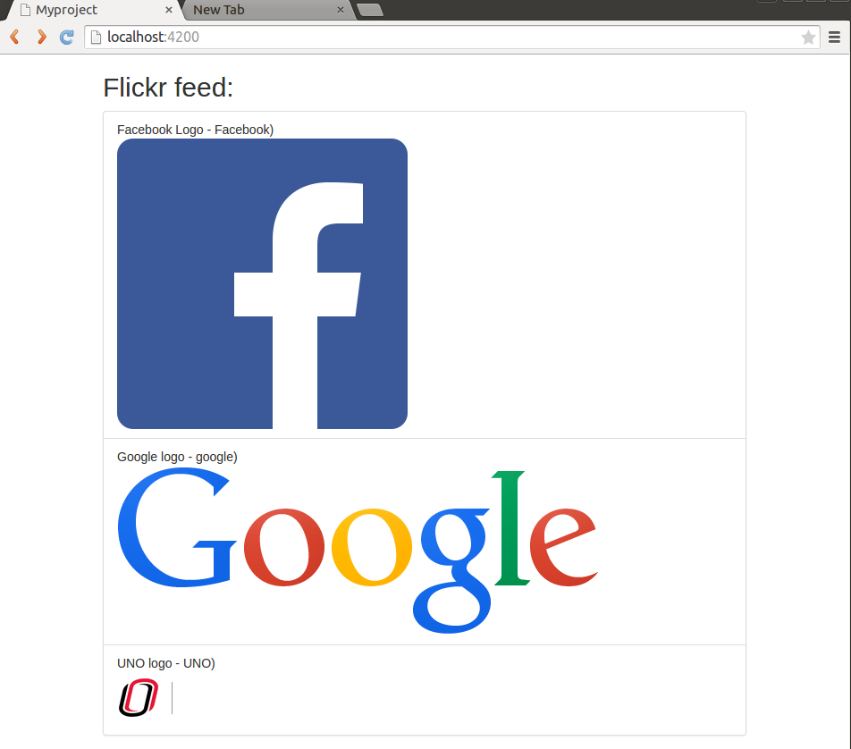
This is nice, but what happens for really large images?
Lets find out, add a new item to your test data in the controller.
Open /home/student/Desktop/myproject/app/controllers/application.js in sublime. Beneath testimg3, lets add a testimg4
Change:
var testimg3 = Photo.create({
title: "Facebook Logo",
username: "Facebook",
url: "https://www.facebook.com/images/fb_icon_325x325.png"
});
testPhotos.pushObject(testimg1);
testPhotos.pushObject(testimg2);
testPhotos.pushObject(testimg3);
export default Ember.Controller.extend({
photos: testPhotos
});To:
var testimg3 = Photo.create({
title: "Facebook Logo",
username: "Facebook",
url: "https://www.facebook.com/images/fb_icon_325x325.png"
});
var testimg4 = Photo.create({
title: "Hubble Carina Nebula",
username: "NASA",
url: "http://imgsrc.hubblesite.org/hu/db/images/hs-2010-13-a-1920x1200_wallpaper.jpg"
});
testPhotos.pushObject(testimg1);
testPhotos.pushObject(testimg2);
testPhotos.pushObject(testimg3);
testPhotos.pushObject(testimg4);
export default Ember.Controller.extend({
photos: testPhotos
});When the page reloads, you will see that we have a problem - Images aren't scaled to a size that fits in our list group container. Lets fix this..
The best (and easiest) way to fix this is to use CSS. Lets create a new app-specific css file.
Open the app.css file in the "styles" folder (/home/student/Desktop/myproject/app/styles/app.css.
Add the following:
.feed-img {
max-width: 100%;
}Now lets modify our application template (application.hbs in /home/student/Desktop/myproject/app/templates) to use our formatting.
Change these lines (not including the dots):
...
{{photo.title}} ({{photo.username}})
<img src="{{photo.url}}" />
..To these lines (not including the dots):
...
{{photo.title}} ({{photo.username}})
<img class="feed-img" src="{{photo.url}}" />
..Notice, that our hubble image is now scaled to fit into our window. Better yet, it re-scales automatically if you change the window width.
go ahead and make a git add, git commit, and git push, like you did before
12. Handle some data and do some automatic updates as a user types
The thing is if all we wanted was static content we could have simply made a static HTML page without javascript at all. Obviously, we're not stopping here. Lets introduce some actual user functionality to our app.Lets start by adding a search bar, so that users can sort through content by title.
Before we introduce the functionality, lets modify our /home/student/Desktop/myproject/app/templates/application.hbs template to introduce a search bar into the user interface. Lets also clean up our app look by adding a navbar.
In your application.hbs template, change:
<!-- app/templates/application.hbs -->
<div class="container">
<h2 id="title">Flickr feed:</h2>
<ul class="list-group">
{{#each photo in photos}}
<li class="list-group-item">
{{photo.title}} ({{photo.username}})<br>
<img class="feed-img" src="{{photo.url}}" />
</li>
{{/each}}
</ul>
</div>To:
<!-- app/templates/application.hbs -->
<nav class="navbar navbar-default navbar-fixed-top">
<div class="container-fluid">
<div class="navbar-header">
<a class="navbar-brand" href="#">My App</a>
</div>
<div class="navbar-right search-field">
{{#bs-form formLayout="inline" action="search"}}
<label class="control-label">Search By Name:</label>
{{bs-input type="text" value=searchField}}
{{/bs-form}}
</div>
</div>
</nav>
<div class="container">
<ul class="list-group">
{{#each photo in photos}}
<li class="list-group-item">
{{photo.title}} ({{photo.username}})<br>
<img class="feed-img" src="{{photo.url}}" />
</li>
{{/each}}
</ul>
</div>Save using ctrl+s and lets break this down...
The first part i.e. the <nav> element creates a navbar using the relevant bootstrap css to make the navbar stick to the top of the page.
The {{#bs-form}} element is a ember-bootstrap component that wraps bootstrap's form element into a handy ember handlebars helper. This creates an in-line textfield, binds the field to the searchField variable in the controller, and then provides an action handler, called search that will fire if the user hits enter.
You should see something like: 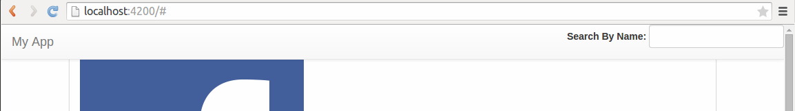
Lets add some quick styling to our /home/student/Desktop/myproject/app/styles/app.css file to clean this up
In sublime, Append the following block to this file:
body { padding-top: 70px; }
.search-field {
padding-top: 8px;
padding-right: 10px;
}and save (ctrl+s), This pads the content body, and centers our new search field.
Time to make it actually work...
Open up your /home/student/Desktop/myproject/app/controllers/application.js controller in sublime and make the following changes. Replace this code:
export default Ember.Controller.extend({
photos: testPhotos
});With this code:
export default Ember.Controller.extend({
photos: testPhotos,
searchField: '',
filteredPhotos: testPhotos,
actions: {
search: function () {
var filter = this.get('searchField');
var rx = new RegExp(filter, 'gi');
var photos = this.get('photos');
this.set('filteredPhotos',
photos.filter(function(photo){
return photo.get('title').match(rx) || photo.get('username').match(rx);
})
);
}
}
});Save with ctrl+s. There is a lot going on here. Lets take each part one at a time.
First, the searchField variable is defined so we can work with it in our controller.
Next, we're defining a filteredPhotos collection, that can collect only the subset of items that we want to filter and display.
In the last part, i.e. in actions, we define a search action to map to the form action we defined in the template. This action, uses something called Regular Expressions to filter the photos collection. In ember, this.get('foo') will return the controller variable named foo. We use this.set to set the filteredPhotos collection to only those photos in our collection that either have the searchField in the title or the username.
Lets try out our new search function!
In your chrome window, type "google" in the "search by name" field of our web app
Now use the ember inspector, by right clicking anywhere in the page, selecting "inspect element", and then clicking the "ember" tab.
You should see: 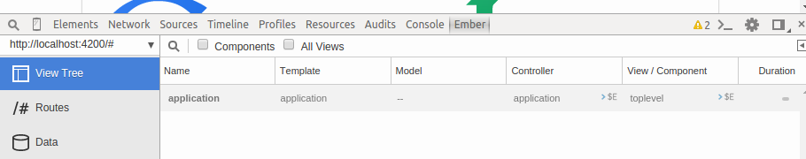
Click "application" then see "own properties" then click "filteredPhotos" then click "0" (sometimes this may also appear in "subclass of ember controller")
You should see: 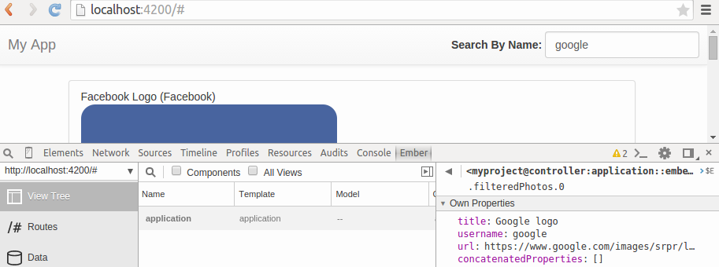
Pretty cool, but how do we actually get the filter to work on our page?
The answer is actually really simple. Go back to your /home/student/Desktop/myproject/app/templatesapplication.hbs template in sublime and change "photos" to "filteredPhotos"
e.g.:
...
<ul class="list-group">
{{#each photo in filteredPhotos}}
...Save (ctrl+s) and now try typing type "google" in the "search by name" field of our web app and hitting enter again.
You have a search bar, Awesome!
Lets also commit our code. In one of your terminals that is not running ember server, type the following:
cd /home/student/Desktop/myproject/
git status
git add -A
git commit -m "end of task 12, created search bar"
git push13. Jazzing up the search bar
Lets make the search autocomplete as well. It turns out this is really easy to do in ember!go back (in sublime) to your /home/student/Desktop/myproject/app/controllers/application.js controller and add the following:
export default Ember.Controller.extend({
photos: testPhotos,
searchField: '',
filteredPhotos: function () {
var filter = this.get('searchField');
var rx = new RegExp(filter, 'gi');
var photos = this.get('photos');
return photos.filter(function(photo){
return photo.get('title').match(rx) || photo.get('username').match(rx);
});
}.property('photos','searchField'),
actions: {
search: function () {
this.get('filteredPhotos');
}
}
});Save (ctrl+s). What did we do, you ask?
We introduced something called a computed property that automatically updates based on the variables its linked to. In this case, we linked "filteredPhotos" to photos and searchField. This means that anytime either of those variables changes, the filteredPhotos property is updated.
So when the user starts typing in the search field, filteredPhotos is automatically updated, and the template refreshes because it is observing our filteredPhotos property. Pretty cool huh?
Lets also make the search bar look a little nicer, now that we have it working.
Using sublime, change the code in /home/student/Desktop/myproject/app/templates/application.hbs from:
<!-- app/templates/application.hbs -->
<nav class="navbar navbar-default navbar-fixed-top">
<div class="container-fluid">
<div class="navbar-header">
<a class="navbar-brand" href="#">My App</a>
</div>
<div class="navbar-right search-field">
{{#bs-form formLayout="inline" action="search"}}
<label class="control-label">Search By Name:</label>
{{bs-input type="text" value=searchField}}
{{/bs-form}}
</div>
</div>
</nav>
<div class="container">
<ul class="list-group">
{{#each photo in filteredPhotos}}
<li class="list-group-item">
{{photo.title}} ({{photo.username}})<br>
<img class="feed-img" src="{{photo.url}}" />
</li>
{{/each}}
</ul>
</div>To:
<!-- app/templates/application.hbs -->
<nav class="navbar navbar-default navbar-fixed-top">
<div class="container-fluid">
<div class="navbar-header">
<a class="navbar-brand" href="#">My App</a>
</div>
<div class="navbar-right search-field">
{{#bs-form formLayout="inline" action="search"}}
{{bs-input type="text" value=searchField placeholder="search something"}}
<button type="submit" class="btn btn-default">
<span class="glyphicon glyphicon-search" aria-hidden="true"></span>
</button>
{{/bs-form}}
</div>
</div>
</nav>
<div class="container">
<ul class="list-group">
{{#each photo in filteredPhotos}}
<li class="list-group-item">
{{photo.title}} ({{photo.username}})<br>
<img class="feed-img" src="{{photo.url}}" />
</li>
{{/each}}
</ul>
</div>Now save (ctrl+s). Ah, much cleaner yeah?
UNIT3: Interfacing with external Web APIs
14. First look at flickr
Up to this point, we've been working with some dummy data to build out a simple interface. Now its time to connect our app up to flickr to get some real data!Before we get started, lets take a closer look at the flickr API. Flickr provides an open (un-authenticated) API to do most operations on their site (e.g. lookup photos, find tag clusters, read comments, etc) and also offers authenticated API calls for certain other operations (e.g. uploading new pictures, viewing private or group photos, etc).
Take a look at https://www.flickr.com/services/api/
This provides a full listing of all of the Flicker API calls to describe the functionality and parameters needed for invocation.
To get yourself an API key (to use with the rest of the tutorial) go here: https://www.flickr.com/services/api/keys/
We'll be using the getClusterPhotos method to start off. The information for this method can be found at https://www.flickr.com/services/api/flickr.tags.getClusterPhotos.htm.
Go there and click the "API explorer" link at the bottom.
Try entering a few different tags e.g. "face" or "hi"
Also make sure to change the method to JSON (stands for JavaScript Object Notation), since this is the version you will be using in your app.
You should see something like:
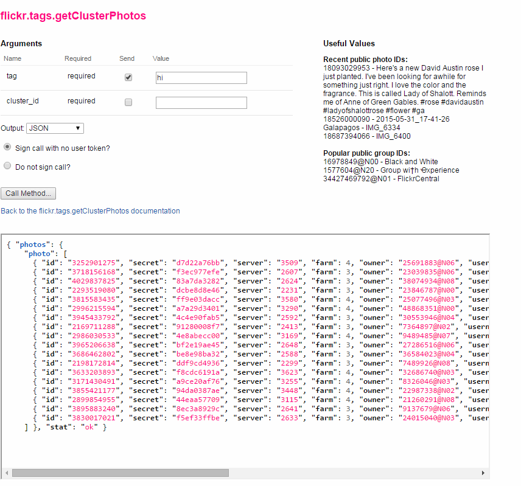
Notice, that these photos have more information than our photo object does. We'll fix this later.
First lets actually focus on getting flickr data into our page.
To begin, lets create a function that makes ajax requests to the flickr api to get JSON data.
Using sublime, open your /home/student/Desktop/myproject/app/controllers/application.js controller, add an action called "getPhotos" (See below):
getPhotos: function(){
var apiKey = '46afdefe8cde4ac04e84904e6e10de9e';
var host = 'https://api.flickr.com/services/rest/';
var method = "flickr.tags.getClusterPhotos";
var tag = "hi";
var requestURL = host + "?method="+method + "&api_key="+apiKey+"&tag="+tag+"&format=json&nojsoncallback=1";
Ember.$.getJSON(requestURL, function(data){//callback for successfully completed requests
console.log(data);
});
},
This getPhotos code should go inside of the 'actions' block already in your controller. Once added, make sure to ctrl+s to save. This function will invoke the flickr API and load the latest photos related to the "hi" tag. The loaded photos are then just pushed to the console as output.
To test our function, lets add a temporary UI button to our application template and wire it up to this action.
Using sublime edit /home/student/Desktop/myproject/app/templates/application.hbs to add a button as follows:
<!-- app/templates/application.hbs -->
<nav class="navbar navbar-default navbar-fixed-top">
<div class="container-fluid">
<div class="navbar-header">
<a class="navbar-brand" href="#">My App</a>
</div>
<div class="navbar-right search-field">
{{#bs-form formLayout="inline" action="search"}}
{{#bs-button type="primary" icon="glyphicon glyphicon-download" action="getPhotos"}}{{/bs-button}}
...Once added, press ctrl+s to save.
Now you should see a download button like:

Click this button, then observe your console and you should see some data downloaded from the flickr api.
It should looke like:
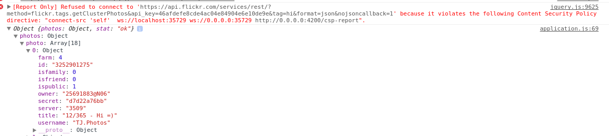
Hooray! You've loaded in some data. Now its time to make it work with out photos collection object, so that we can display it on the page.
For this, we need to add some attributes to our Photo object.
In your /home/student/Desktop/myproject/app/controllers/application.js controller change Photo to:
var Photo = Ember.Object.extend({
title: '',
username: '',
url: '',
//flickr extra data
owner: '',
//flickr url data
id: '',
farm: 0,
secret: '',
server: '',
});Now lets change our getPhotos method to load the data into our photo collection, instead of the console.
Open /home/student/Desktop/myproject/app/controllers/application.js and swap out the getPhotos method for the following:
getPhotos: function(){
var apiKey = '46afdefe8cde4ac04e84904e6e10de9e';
var host = 'https://api.flickr.com/services/rest/';
var method = "flickr.tags.getClusterPhotos";
var tag = "hi";
var requestURL = host + "?method="+method + "&api_key="+apiKey+"&tag="+tag+"&format=json&nojsoncallback=1";
var photos = this.get('photos');
Ember.$.getJSON(requestURL, function(data){
//callback for successfully completed requests
console.log(data);
data.photos.photo.map(function(photo) {
var newPhotoItem = Photo.create({
title: photo.title,
username: photo.username,
//flickr extra data
owner: photo.owner,
//flickr url data
id: photo.id,
farm: photo.farm,
secret: photo.secret,
server: photo.server,
});
photos.pushObject(newPhotoItem);
})
});
},Now save (Ctrl+s). This code will get the response from the flickr API (the variable named "data"), iterate over the data item and find each photo in the collection. Finally the code creates a new instance of our Photo object, instantiates it with the data loaded from the API, and pushes it into the photos collection using the pushObject method.
We have to make one last change to see the results in our page.
Since we are updating the "photos" data collection, we need to make sure that our computed property filteredPhotos is updated each time it is updated.
For that, we need to change the property to make it observe each item in photos, in the /home/student/Desktop/myproject/app/controllers/application.js controller. So change the following:
filteredPhotos: function () {
var filter = this.get('searchField');
var rx = new RegExp(filter, 'gi');
var photos = this.get('photos');
return photos.filter(function(photo){
return photo.get('title').match(rx) || photo.get('username').match(rx);
});
}.property('photos','searchField'),To:
filteredPhotos: function () {
var filter = this.get('searchField');
var rx = new RegExp(filter, 'gi');
var photos = this.get('photos');
return photos.filter(function(photo){
return photo.get('title').match(rx) || photo.get('username').match(rx);
});
}.property('photos.@each','searchField'),Save this change (ctrl+s), and then click the download button on the web app. You should see the data from flickr being loaded into your page. Pretty cool huh?
But, you also probably notice a problem. Where is the actual photo?
Well you may have noticed that we didn't load the url parameter, so our app doesnt know where to go to find the actual photo
It turns out that flickr photo urls can be derived entirely from the data provided by the api
We need to know the photo id, the server farm, the secret key, and the server hosting the image on the server farm.
With this data we can construct the url. See https://www.flickr.com/services/api/misc.urls.html for more details.
The basic format is: https://farm{farm-id}.staticflickr.com/{server-id}/{id}_{secret}_b.jpg
where b stands for large sized.
To make this work with our app, we can make the Photo url a computed property that returns an appropriate url given these parameters
In the /home/student/Desktop/myproject/app/controllers/application.js controller file, change:
var Photo = Ember.Object.extend({
title: '',
username: '',
url: '',
//flickr extra data
owner: '',
//flickr url data
id: '',
farm: 0,
secret: '',
server: '',
});To:
var Photo = Ember.Object.extend({
title: '',
username: '',
//flickr extra data
owner: '',
//flickr url data
id: '',
farm: 0,
secret: '',
server: '',
url: function(){
return "https://farm"+this.get('farm')+
".staticflickr.com/"+this.get('server')+
"/"+this.get('id')+"_"+this.get('secret')+"_b.jpg";
}.property('farm','server','id','secret'),
});and save (ctrl+s). You should now actually see the images from flickr!!
Notice that your search feature still works for sorting through images and filtering out the ones that match your query
Lets commit our code
cd /home/student/Desktop/myproject/
git status
git add -A
git commit -m "end of task 15, basic integration with flickr"UNIT4: Separating Data and Logic Layers
15. Cleaning up
Now that we can connect with flicker, lets clean up our app.Start by removing the test content from our /home/student/Desktop/myproject/app/controllers/application.js controller
Change:
var PhotoCollection = Ember.ArrayProxy.extend(Ember.SortableMixin, {
sortProperties: ['title'],
sortAscending: true,
content: [],
});
var testPhotos = PhotoCollection.create();
var testimg1 = Photo.create({
title: "Google logo",
username: "google",
url: "https://www.google.com/images/srpr/logo11w.png"
});
var testimg2 = Photo.create({
title: "UNO logo",
username: "UNO",
url: "http://www.unomaha.edu/_files/images/logo-subsite-o-2.png"
});
var testimg3 = Photo.create({
title: "Facebook Logo",
username: "Facebook",
url: "https://www.facebook.com/images/fb_icon_325x325.png"
});
var testimg4 = Photo.create({
title: "Hubble Carina Nebula",
username: "NASA",
url: "http://imgsrc.hubblesite.org/hu/db/images/hs-2010-13-a-1920x1200_wallpaper.jpg"
});
testPhotos.pushObject(testimg1);
testPhotos.pushObject(testimg2);
testPhotos.pushObject(testimg3);
testPhotos.pushObject(testimg4);
export default Ember.Controller.extend({
photos: testPhotos,To:
var PhotoCollection = Ember.ArrayProxy.extend(Ember.SortableMixin, {
sortProperties: ['title'],
sortAscending: true,
content: [],
});
export default Ember.Controller.extend({
photos: PhotoCollection.create(),This will remove all our test images
If you look at your ember command line, you will notice that your content-security-policy is being violated again because we are loading data from non-approved entities.
Lets fix this by adding flickr to our whitelist.
Open your environment.js file in /config and change contentSecurityPolicy to:
contentSecurityPolicy: {
'default-src': "'self' ",
'script-src': "'self' ",
'font-src': "'self' ",
'connect-src': "'self' https://api.flickr.com", //Allow JSON requests to the flickr api
'img-src': "'self' http: https:", //Allow images from any http/https
'style-src': "'self' ",
'media-src': "'self' "
}Now, we don't want users to see nothing when they first visit our app, so lets make some cosmetic changes to our app template.
After opening /home/student/Desktop/myproject/app/templates/application.hbs, replace the code in the 'div' container with:
<div class="container">
{{#if filteredPhotos}}
<ul class="list-group">
{{#each photo in filteredPhotos}}
<li class="list-group-item">
{{photo.title}} ({{photo.username}})<br>
<img class="feed-img" src="{{photo.url}}" />
</li>
{{/each}}
</ul>
{{else}}
<div class="jumbotron">
<h1>[app-name]</h1>
<p>Created by [yourname]</p>
<p>Search for a flickr tag to load the most recent images</p>
</div>
{{/if}}
</div>and save (Ctrl+s). Lets also adjust our search bar to only show when photos are on the page and then introduce a bar for searching flickr tags
in the same file (/home/student/Desktop/myproject/app/templates/application.hbs) change the navbar {{#bs-form}} from:
{{#bs-form formLayout="inline" action="search"}}
{{#bs-button type="primary" icon="glyphicon glyphicon-download" action="getPhotos"}}{{/bs-button}}
{{bs-input type="text" value=searchField placeholder="search something"}}
<button type="submit" class="btn btn-default">
<span class="glyphicon glyphicon-search" aria-hidden="true"></span>
</button>
{{/bs-form}}to:
{{#bs-form formLayout="inline" action="search"}}
{{#if filteredPhotos}}
{{bs-input type="text" value=searchField placeholder="filter photos"}}
{{/if}}
{{bs-input type="text" value=tagSearchField action="search" placeholder="search for a flickr tag"}}
<button type="submit" class="btn btn-default">
<span class="glyphicon glyphicon-search" aria-hidden="true"></span>
</button>
{{/bs-form}}and save (Ctrl+s). Now we need to adjust the controller to fit
Go back to /home/student/Desktop/myproject/app/controllers/application.js and add a tagSearchField: to the declared variable section. (just below searchField as follows - NOTE: make sure not to re-copy the other stuff in.
photos: PhotoCollection.create(),
searchField: '',
tagSearchField: '',Now save (Ctrl+s) and then (in the same file) change the 'actions' block to the following:
actions: {
search: function () {
this.get('photos').content.clear();
this.send('getPhotos',this.get('tagSearchField'));
},
getPhotos: function(tag){
var apiKey = '4435e3a217bc7afc94dfcba607b70eb1';
var host = 'https://api.flickr.com/services/rest/';
var method = "flickr.tags.getClusterPhotos";
var requestURL = host + "?method="+method + "&api_key="+apiKey+"&tag="+tag+"&format=json&nojsoncallback=1";
var photos = this.get('photos');
Ember.$.getJSON(requestURL, function(data){
//callback for successfully completed requests
console.log(data);
data.photos.photo.map(function(photo) {
var newPhotoItem = Photo.create({
title: photo.title,
username: photo.username,
//flickr extra data
owner: photo.owner,
//flickr url data
id: photo.id,
farm: photo.farm,
secret: photo.secret,
server: photo.server,
});
photos.pushObject(newPhotoItem);
});
});
},
}Save again (ctrl+s). So this will allow search to call getPhotos and send it the value of the tagSearchField when a user clicks the search button or hits enter in the tagSearch box. Once content is loaded, the nav bar will display a second field for filtering photos by name.
Its looking good yeah?
Try searching some different tags and see the results.
Lets do one last thing to clean up.
We have a Photo object defined in the controller. This is bad form because it mixes the model i.e. the photo object, with the controller.
Ember has something called a model, where Photo would fit much better. Lets move it there
Open a terminal window not running ember and type the following:
cd /home/student/Desktop/myproject/
ember generate model photoThis will create a new file called photo.js in your /home/student/Desktop/myproject/app/models/ folder.
Copy the following into the new /home/student/Desktop/myproject/app/models/photo.js file:
import DS from 'ember-data';
export default DS.Model.extend({
title: '',
username: '',
//flickr extra data
owner: '',
//flickr url data
id: '',
farm: 0,
secret: '',
server: '',
url: function(){
return "https://farm"+this.get('farm')+
".staticflickr.com/"+this.get('server')+
"/"+this.get('id')+"_"+this.get('secret')+"_b.jpg";
}.property('farm','server','id','secret'),
});Save (Ctrl+s). Now to patch up your /home/student/Desktop/myproject/app/controllers/application.js you just need to change search and getPhotos to the following:
search: function () {
this.get('photos').content.clear();
this.store.unloadAll('photo');
this.send('getPhotos',this.get('tagSearchField'));
},
getPhotos: function(tag){
var apiKey = '4435e3a217bc7afc94dfcba607b70eb1';
var host = 'https://api.flickr.com/services/rest/';
var method = "flickr.tags.getClusterPhotos";
var requestURL = host + "?method="+method + "&api_key="+apiKey+"&tag="+tag+"&format=json&nojsoncallback=1";
var photos = this.get('photos');
var t = this;
Ember.$.getJSON(requestURL, function(data){
//callback for successfully completed requests
console.log(data);
data.photos.photo.map(function(photo) {
var newPhotoItem = t.store.createRecord('photo',{
title: photo.title,
username: photo.username,
//flickr extra data
owner: photo.owner,
//flickr url data
id: photo.id,
farm: photo.farm,
secret: photo.secret,
server: photo.server,
});
photos.pushObject(newPhotoItem);
});
});
},Save (Ctrl+s). This introduces the ember concept of a store which houses records for you. It also maintains the seperation between controllers and models (in this case a Photo) in case you want to use your model elsewhere in your app outside of this controller. Lets commit our code, in an open terminal not running ember server type
cd /home/student/Desktop/myproject/
git status
git add -A
git commit -m "end of task 16, using ember store"UNIT5: Creating a Good User Experience
16. Adding a tag hotlist to the landing page
Lets add a list of the hottest tags to the landing page so that users have somewhere to start rather than just searching tagsAs usual, start with the template, lets add some ui to display tags
In your /home/student/Desktop/myproject/app/templates/application.hbs template replace the {{else}} block with the following:
{{else}}
<div class="jumbotron">
<h1>[app-name]</h1>
<p>Created by [yourname]</p>
<p>Click one of the popular flickr tags below or search one above:</p>
{{#each tag in tagList}}
<button class="btn btn-info tag-button" {{action "clicktag" tag}}>{{tag}}</button>
{{/each}}
</div>
{{/if}}Save (Ctrl+s). Like our photo list, this will iterate over the tagList data and display clickable buttons to search based on whatever value the "tag" property is.
Of course we need to wire it up in the controller.
In /home/student/Desktop/myproject/app/controllers/application.js add the following to the bottom of action list (under getPhotos):
},
clicktag: function(tag){
this.set('tagSearchField', tag);
this.get('photos').content.clear();
this.store.unloadAll('photo');
this.send('getPhotos',tag);
}Save (ctrl+s). This works much like the search field, but it also fills in the tagSearchField so that when a user clicks the tag, it ends up in your search bar
You also need to add the tagList property to the application controller (/home/student/Desktop/myproject/app/controllers/application.js), add the following test data just under tagSearchField:
tagList: ['hi','cheese'],
filteredPhotos: function () {
Save (ctrl+s) and reload your app and try clicking one of the tags
Pretty awesome yeah?
Can you guess the next step?
If you were thinking the next step is to replace the dummy data with actual data from flickr, then you would be right
Go back to your /home/student/Desktop/myproject/app/controllers/application.js controller and add the following (beneath actions), MAKING SURE to add a comma after actions block that we added before:
init: function(){
this._super.apply(this, arguments);
var apiKey = '4435e3a217bc7afc94dfcba607b70eb1';
var host = 'https://api.flickr.com/services/rest/';
var method = "flickr.tags.getHotList";
var requestURL = host + "?method="+method + "&api_key="+apiKey+"&count=75&format=json&nojsoncallback=1";
var t = this;
Ember.$.getJSON(requestURL, function(data){
//callback for successfully completed requests
console.log(data);
data.hottags.tag.map(function(tag) {
t.get('tagList').pushObject(tag._content);
});
});
}Save (ctrl+s). This invokes the controller's init method in order to load in data when the page loads. We're loading in the list of top recent tags for the day on flickr.
Ok its working cool!
Lets style it a little so that the buttons look better.
In /home/student/Desktop/myproject/app/styles/app.css add the following:
.tag-button {
padding:4px;
margin: 1px;
}At this point you should see something like:
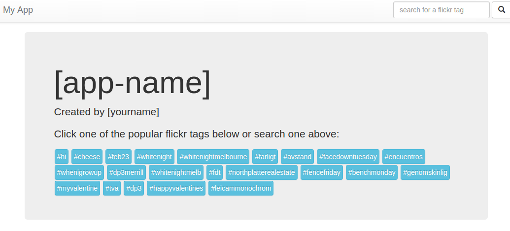
Lets commit our code
cd /home/student/Desktop/myproject/
git status
git add -A
git commit -m "end of task 17, loads data when the page loads"17. Making your app more robust
Up until this point, we've been using the tags.getClusterPhotos method in the flickr API because it was a quick and dirty way to get the data we needed.Unfortunately, as you may have noticed by now, tag cluster photos aren't the most current photos for a given tag.
Lets swap out tags.getClusterPhotos for a more robust search method called photos.search.
Try exploring this new method on the flickr API. You can do that here: https://www.flickr.com/services/api/flickr.photos.search.html
The problem with this method is that it doesn't give us all of the photo information for each returned photo. It turns out that our tag.getClusterPhoto method wasn't giving us all of the information anyway
To get all of the extra information about a photo, we can use the photo.getInfo method. Try plugging in a photo id from the API explorer and see what you get. The method can be found here: https://www.flickr.com/services/api/flickr.photos.getInfo.htm
In our app, we're going to make secondary queries for each photo we load to get all of the photo information. This will also let us to annotate the photos we load much better.
To start lets swap out the getClusterPhotos method. In the /home/student/Desktop/myproject/app/controllers/application.js controller change the getPhotos method to the following:
getPhotos: function(tag){
var apiKey = '4435e3a217bc7afc94dfcba607b70eb1';
var host = 'https://api.flickr.com/services/rest/';
var method = "flickr.photos.search";
var requestURL = host + "?method="+method + "&api_key="+apiKey+"&tags="+tag+"&per_page=50&format=json&nojsoncallback=1";
var photos = this.get('photos');
var t = this;
Ember.$.getJSON(requestURL, function(data){
//callback for successfully completed requests
//make secondary requests to get all of the photo information
data.photos.photo.map(function(photoitem) {//iterate over each photo
var infoRequestURL = host + "?method="+"flickr.photos.getInfo" + "&api_key="+apiKey+ "&photo_id="+photoitem.id+"&format=json&nojsoncallback=1";
Ember.$.getJSON(infoRequestURL, function(item){
var photo = item.photo;
var tags = photo.tags.tag.map(function(tagitem){
return tagitem._content;
});
var newPhotoItem = t.store.createRecord('photo',{
title: photo.title._content,
dates: photo.dates,
owner: photo.owner,
description: photo.description._content,
link: photo.urls.url[0]._content,
views: photo.views,
tags: tags,
//flickr url data
id: photo.id,
farm: photo.farm,
secret: photo.secret,
server: photo.server,
});
photos.pushObject(newPhotoItem);
});
});
});
},Save (ctrl+s).
There is a lot going on here, obviously. First we introduced a second query under the data.photos.photo.map call.
The second query uses the photos.getInfo API call to return all of the data about each photo as we get them in the main list
We then parse this data as item.photo and load it into our newPhotoItem like before
Notice we have a different photo structure than before. This new structure adds a bunch of new information like the dates in which the photo was uploaded and modified, more information about the owner of the photo, a photo description uploaded by the user, a link to the owner's profile page in flickr, and a set of tags attached to the photo.
Lets modify our photo model to accomodate for this new information.
First lets add an object transform so we can pull in javascript objects directly into our model.
Open one of your terminals not running ember server and type the following command:
cd /home/student/Desktop/myproject/
ember generate transform objectThis will create an object.js file in your /home/student/Desktop/myproject/app/transforms folder.
Open it up and replace the code in it with the following
// app/transforms/object.js
import Ember from 'ember';
import DS from 'ember-data';
export default DS.Transform.extend({
deserialize: function(value) {
if (!Ember.$.isPlainObject(value)) {
return {};
} else {
return value;
}
},
serialize: function(value) {
if (!Ember.$.isPlainObject(value)) {
return {};
} else {
return value;
}
}
});
Save (ctrl+s). Now lets open our photo.js in the /home/student/Desktop/myproject/app/models/ folder and update it to include all of our new data types. Change it to the following:
import DS from 'ember-data';
export default DS.Model.extend({
title: DS.attr('string'),
dates: DS.attr('object'),
owner: DS.attr('object'),
description: DS.attr('string'),
link: DS.attr('string'),
views: DS.attr('number'),
tags: DS.attr('object'),
//flickr url data
id: '',
farm: DS.attr('number'),
secret: DS.attr('string'),
server: DS.attr('string'),
url: function(){
return "https://farm"+this.get('farm')+
".staticflickr.com/"+this.get('server')+
"/"+this.get('id')+"_"+this.get('secret')+"_b.jpg";
}.property('farm','server','id','secret'),
});Save (ctrl+s). This uses DS.attr to make all of the data an attribute in ember data. This will be helpful later when we update our template.
Also notice that we are using our new transform (DS.attr('object')) to load in the more complicated fields without worrying about their structure.
We will return to these in a little bit
With the new structure in place, double check that you don't have any errors. You should still see photos if you search a tag (e.g. hi) and now there should be many more photos loading.
To double check our new photo model, lets use the ember inspector and look at a few of our data items.
In Chrome click ember, then select "data" on the left. You should see something like:
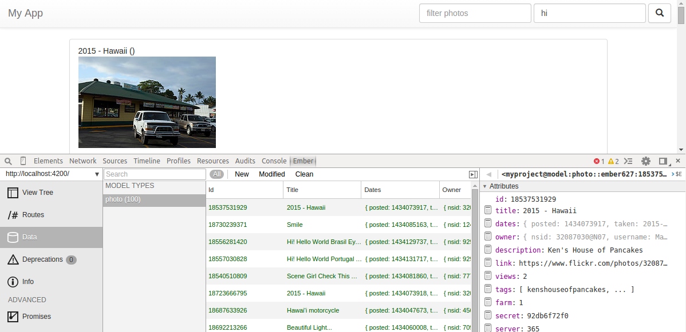
So this is pretty cool.
Lets add some of this new data to our photo template.
In the /home/student/Desktop/myproject/app/templates/application.hbs template change the {{#each photo in filteredPhotos}} block to be:
{{#each photo in filteredPhotos}}
<li class="list-group-item">
Title: {{photo.title}} <br>
{{photo.description}}<br>
Views: {{photo.views}}<br>
Tags: {{#each tag in photo.tags}}{{tag}}, {{/each}}<br>
User: {{photo.owner.username}}<br>
Profile: <a href={{photo.link}}>{{photo.link}}</a>
<img class="feed-img" src="{{photo.url}}" />
</li>
{{/each}}Save (ctrl+s). Now you should see all of this new information in the page if you search a tag. It should look something like
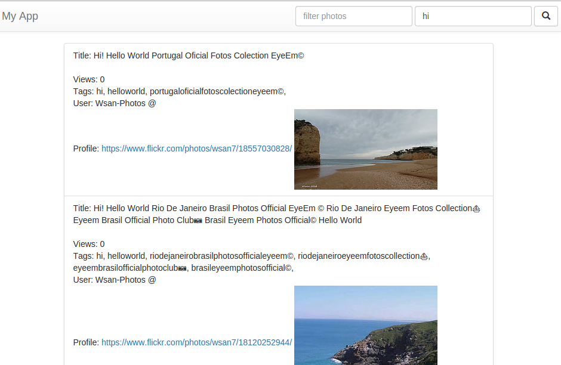
Pretty cool yeah?
Obviously the format kind of sucks, so lets style it up with bootstrap and some better markup.
In the /home/student/Desktop/myproject/app/templates/application.hbs template change the {{#each photo in filteredPhotos}} block to be:
<ul class="list-group">
{{#each photo in filteredPhotos}}
<li class="list-group-item">
<div class="media">
<div class="media-left media-middle">
<a href="{{photo.link}}" target="_blank">
<img class="media-object" src="{{photo.url}}" />
</a>
Taken: {{photo.dates.taken}}<br>
By: <a href={{photo.ownerurl}} target="_blank">{{photo.owner.username}}</a><br>
</div>
<div class="media-body">
<h4 class="media-heading">{{photo.title}} ({{photo.views}} Views)</h4>
{{{photo.description}}}
</div>
</div>
<br>
<div class="row">
<div class="col-md-1 col-xs-1 col-sm-1">Tags:</div>
<div class="col-md-11 col-xs-11 col-sm-11">
{{#each tag in photo.tags}}
<button class="btn btn-info btn-xs post-tag-button" {{action "clicktag" tag}}>#{{tag}}</button>
{{/each}}
</div>
</div>
</li>
{{/each}}
</ul>Save (ctrl+s). This makes our interface look really nice. It puts the post on the left, uses the media header to display the photo title. Places the description beneath the photo title and lists out photo information, like the date it was taken, the user who took it (with a link to their profile), and the tags on the post.
Lets make three small changes to make the ownerurl work, give the tags some better styling, and to change the date from machine format to human format.
First, for ownerurl, open up your /home/student/Desktop/myproject/app/models/photo.js model and add the following beneath the url computed property
ownerurl: function () {
return "http://www.flickr.com/photos/"+this.get('owner.nsid');
}.property('owner.nsid')Save (Ctrl+s). Next lets add some styling to the tags under the post. Open /home/student/Desktop/myproject/app/styles/app.css in and add the following:
.post-tag-button {
padding:2px;
margin-top: 1px;
}Save (ctrl+s). Finally to make the date look better add the following to your photo model (/home/student/Desktop/myproject/app/models/photo.js) under ownerurl:
humanReadableDate: function () {
var taken = new Date(this.get('dates.taken'));
var days = ["Sunday","Monday","Tuesday","Wednesday","Thursday","Friday","Saturday"];
var months = ["January","Feburary","March","April","May","June","July",
"August","September","October","November","December"];
return days[taken.getDay()] + " " + months[taken.getMonth()] +" "+taken.getDate()+", "+taken.getFullYear();
}.property('dates.taken')Save (Ctrl+s). This return days formatted as [Week Day] [month] DD, YYYY
Lets just tell our template to use this, in /home/student/Desktop/myproject/app/templates/application.hbs change:
<div class="media-left media-middle"><div class="media-left media-middle">
<a href="{{photo.link}}" target="_blank">
<img class="media-object" src="{{photo.url}}" />
</a>
Taken: {{photo.humanReadableDate}}<br>
By: <a href={{photo.ownerurl}} target="_blank">{{photo.owner.username}}</a><br>
</div>Save (ctrl+s). If everything is working you should see something like:
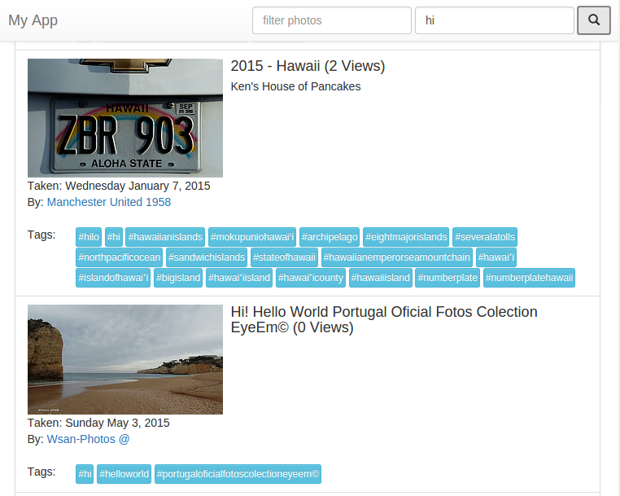
Notice that the photos aren't in chronological order?
Lets fix that
In your /home/student/Desktop/myproject/app/controllers/application.js controller, change the PhotoCollection object to look like the following:
var PhotoCollection = Ember.ArrayProxy.extend(Ember.SortableMixin, {
sortProperties: ['dates.taken'],
sortAscending: false,
content: [],
});Save (ctrl+s). Lastly, when we change the format of a photo, it broke the filter field. Lets fix the regex to work correctly again. In /home/student/Desktop/myproject/app/controllers/application.js controller replace the filteredPhotos method with the following:
filteredPhotos: function () {
var filter = this.get('searchField');
var rx = new RegExp(filter, 'gi');
var photos = this.get('photos');
return photos.filter(function(photo){
return photo.get('title').match(rx) || photo.get('owner.username').match(rx);
});
}.property('photos.@each','searchField'),Save (ctrl+s). We basically just replaced username with owner.username. It should work again now
We finally have a completed photo feed!
Great work!
Lets commit our codecd /home/student/Desktop/myproject/
git status
git add -A
git commit -m "end of task 18, photo feed working"18. Making a couple of nice visual changes
You may have noticed, that if you search another tag after you've already searched a tag, there is a moment where the app switches back to the landing page then jumps to your resultsThis happens, because we set up a simple if in our template that checked to see if filteredPhotos was empty. When we clear it as part of the clickedTag and search methods, we end up temporarily making the if false.
Lets add a condition to make the transition smoother.
Change the {{else}} condition beneath filteredPhotos in /home/student/Desktop/myproject/app/templates/application.hbs to the following:.
{{else}}
{{#if loading}}
<img src="../page-loading.gif" class="img-responsive center-block"/>
{{else}}
<div class="jumbotron">
<h1>[app-name]</h1>
<p>Created by [yourname]</p>
<p>Click one of the popular flickr tags below or search one above:</p>
{{#each tag in tagList}}
<button class="btn btn-info btn-small tag-button" {{action "clicktag" tag}}>#{{tag}}</button>
{{/each}}
</div>
{{/if}}
{{/if}}Save (ctrl+s). Now download the page-loading gif from http://www.bkmag.com/wp-content/uploads/2014/09/loading.gif
Right click and download this file to your /Desktop/myproject/public folder. Also, change your search and clicktag methods in the /home/student/Desktop/myproject/app/controllers/application.js controller to the following:
search: function () {
this.set('loading', true);
this.get('photos').content.clear();
this.store.unloadAll('photo');
this.send('getPhotos',this.get('tagSearchField'));
},and
clicktag: function(tag){
this.set('tagSearchField', tag);
this.set('loading', true);
this.get('photos').content.clear();
this.store.unloadAll('photo');
this.send('getPhotos',tag);
}Save (ctrl+s). This will add an intermediate step to ensure that a loading page shows up between searches after the initial search.
Pretty cool
Lets also add a spinner to individual loading images to make transitions cleaner.
Download http://preloaders.net/preloaders/4/Fading%20balls.gif to your /public folder as loading-img.gif
Then open your /home/student/Desktop/myproject/app/styles/app.css file and change feed-img block to:
.feed-img {
background: url('../loading-img.gif');
min-height: 64px;
min-width: 64px;
max-width: 240px;
}Now add the "feed-img" class to the img tag in /home/student/Desktop/myproject/app/templates/application.hbs
<a href="{{photo.link}}" target="_blank">
<img class="media-object feed-img" src="{{photo.url}}" />
</a>Lets do one last thing for making transitions look nice.
There is an add-on called "liquid-fire" that makes ember really shine. Lets add it to our project
In one of your open terminals (not the ember server one) do the following:
cd /home/student/Desktop/myproject/
sudo ember install liquid-fire@0.21.*Now switch to the terminal running ember server and restart it (ctrl+c, then press up arrow key, then hit enter).
Then to enable it, open your /home/student/Desktop/myproject/app/templates/application.hbs file and change the following block:
{{if}}{{#liquid-if filteredPhotosLoaded use="toDown"}}
<ul class="list-group">
{{#each photo in filteredPhotos}}
<li class="list-group-item">
<div class="media">
<div class="media-left media-middle">
<a href="{{photo.link}}" target="_blank">
<img class="media-object feed-img" src="{{photo.url}}" />
</a>
Taken: {{photo.humanReadableDate}}<br>
By: <a href={{photo.ownerurl}} target="_blank">{{photo.owner.username}}</a><br>
</div>
<div class="media-body">
<h4 class="media-heading">{{photo.title}} ({{photo.views}} Views)</h4>
{{{photo.description}}}
</div>
</div>
<br>
<div class="row">
<div class="col-md-1 col-xs-1 col-sm-1">Tags:</div>
<div class="col-md-11 col-xs-11 col-sm-11">
{{#each tag in photo.tags}}
<button class="btn btn-info btn-xs post-tag-button" {{action "clicktag" tag}}>#{{tag}}</button>
{{/each}}
</div>
</div>
</li>
{{/each}}
</ul>
{{else}}
{{#liquid-if loading use="toDown"}}
<img src="../page-loading.gif" class="img-responsive center-block"/>
{{else}}
<div class="jumbotron">
<h1>[app-name]</h1>
<p>Created by [yourname]</p>
<p>Click one of the popular flickr tags below or search one above:</p>
{{#each tag in tagList}}
<button class="btn btn-info btn-small tag-button" {{action "clicktag" tag}}>#{{tag}}</button>
{{/each}}
</div>
{{/liquid-if}}
{{/liquid-if}}Save (Ctrl+s). To make this work, we need to add in a few things to our /home/student/Desktop/myproject/app/controllers/application.js controller. First, define a new property called filteredPhotosLoaded and set it to false initially. In /home/student/Desktop/myproject/app/controllers/application.js add the following under your tagSearchField
filteredPhotosLoaded: false,Save (ctrl+s). Pretty cool yeah?
Lets make one more change to make sure that the loading page refreshes when you click a new tag
at the top of your /home/student/Desktop/myproject/app/controllers/application.js controller beneath the defined attributes, find the line:
filteredPhotosLoaded: false,Replace it with the computed property below:
filteredPhotosLoaded: function(){
return this.get('filteredPhotos').length >0;
}.property('filteredPhotos.length'),Save (ctrl+s). This property will constantly watch the entries in the filteredPhotos array and return true if the length is greater than 0. It turns out this condition is exactly what we need to watch in the template in order to appropriately update the page to display our loading graph (show spinning wheel while waiting for the data, then show individual spinning wheels on the pictures after the data has loaded but not the images).
Our app is really coming along.
19. Adding some rich features
Lets make one last modification to allow users to click images and have them expand full screen for larger viewingFor this we will use another ember-addon called "ember-cli-lightbox"
To install open one of your non-ember server terminals and type:
cd /home/student/Desktop/myproject/
sudo ember install ember-cli-lightbox
sudo chown student -R /home/student/Desktop/myproject/Since lightbox uses a base64 image encoding we need to update our content security policy to allow base64 images. Change your content security policy to allow for "data:"
do this as follows:
open /home/student/Desktop/myproject/config/environment.js and add
data: to the img-src line.It should look something like:
'img-src': "'self' http: https: data:",Now lets update the images that appear in the filteredPhotos list by modifying /home/student/Desktop/myproject/app/templates/application.hbs. Specifically replace the
{{#liquid-if}} block with:{{#liquid-if filteredPhotosLoaded use="toDown"}}
<ul class="list-group">
{{#each photo in filteredPhotos}}
<li class="list-group-item">
<div class="media">
<div class="media-left media-middle">
{{light-box href=photo.url data-lightbox=photo.id data-title=photo.title
data-class="media-object feed-img"}}
Taken: <a href={{photo.link}}>{{photo.humanReadableDate}}<br></a>
By: <a href={{photo.ownerurl}} target="_blank">{{photo.owner.username}}</a><br>
</div>
<div class="media-body">
<h4 class="media-heading">{{photo.title}} ({{photo.views}} Views)</h4>
{{{photo.description}}}
</div>
</div>
<br>
<div class="row">
<div class="col-md-1 col-xs-1 col-sm-1">Tags:</div>
<div class="col-md-11 col-xs-11 col-sm-11">
{{#each tag in photo.tags}}
<button class="btn btn-info btn-xs post-tag-button" {{action "clicktag" tag}}>#{{tag}}</button>
{{/each}}
</div>
</div>
</li>
{{/each}}
</ul>
{{else}}Save (Ctrl+s). If everything went well, you should see something like this if you click on an image:
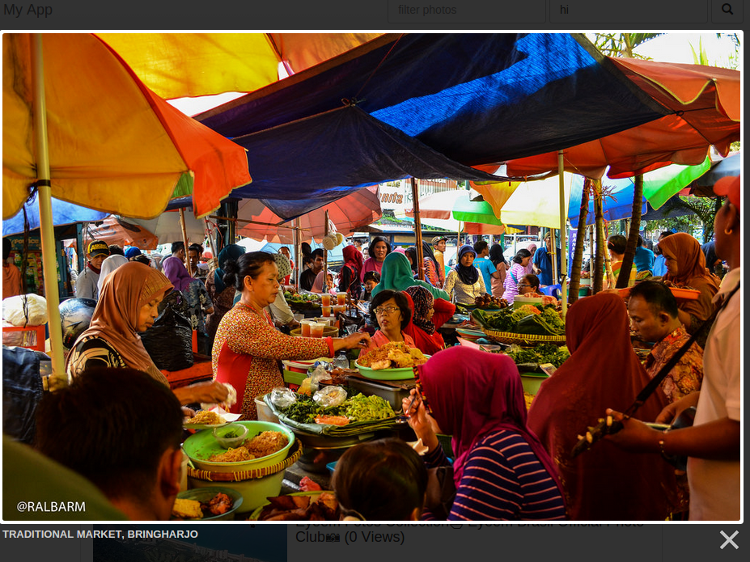
UNIT6: Deployment to Github.io
20. Deployment to GitHub.io
So, now you have this awesome application, but it's stuck on your VM at UNO. How can we share the application with the world?You already have your project on GitHub, which means you can take advantage of GitHub's IO or GitHub Pages. GitHub Pages is a service that lets you host HTML/CSS/JS pages through your GitHub account using a special repository. Since our application is a client-side app, it will work here too! GitHub pages is free!
In this section, we are going to create the Pages repository, set up ember's production environment, and deploy your project to the internet! Let's go!
Set up GitHub Pages
These steps are basically the ones you can find at https://pages.github.com/, but tailored to the in-lab VM set up.
Create a new repository named username.github.io
username is your GitHub username.
This new github.io repo is ready for code.
Clone the Repo
We want to now clone the repo to an area outside of the ember project area. Open a terminal and do so using these commands. (Of course, replace username with your GitHub username.
cd ~/Desktop/
git clone https://github.com/username/username.github.io.git
cd username.github.io
mkdir ember
Configure the Ember Environment for Production
We must now prepare ember's environment to be ready for production deployment. Open the config/environment.js file.
Find
if (environment === 'production') {
}
and replace it with
if (environment === 'production') {
ENV.baseURL = '/ember/';
}
Build for Distribution
We will now build the ember application for distribution. Move into your ember project folder, and run the following ember build command.
cd ../myproject
ember build -prod --output-path ../username.github.io/ember/
Commit and Push your project to GitHub Pages
Once ember is done building, we have to commit the "changes" and push the project to GitHub Pages. Move into your GitHub Pages cloned repo folder then add, commit, and push.
cd ../username.github.io
git add -A
git commit -m "Deployment build"
git push
Now, you can visit your site at http://username.github.io/ember/
It will take GitHub Pages a few minutes to reflect your changes.
Notes
Be sure to watch the console for errors now that the project is deployed. 404 Errors mean that the deployment folder location may not match what was expected.
In your /home/student/Desktop/myproject/app/templates/application.hbs change
<img src="../page-loading.gif" class="img-responsive center-block"/><img src="page-loading.gif" class="img-responsive center-block"/>Now re-build the ember app, and then add, commit, and push the result.
cd ~/Desktop/myproject
ember build -prod --output-path ../username.github.io/ember/
cd ~/Desktop/username.github.io
git add -A
git commit -m "Updated application"
git push
Remember, it takes a minute or two for GitHub Pages to update.
21. Continue at Home
Want to continue this work at home?All you really need to do is install ember-cli and its dependencies.
- Install Node.js for Windows - https://nodejs.org/download/ (The Windows Installer is best)
Or, on Linux/Unix/Mac, just run this in Terminal:
curl -L https://npmjs.org/install.sh | sh - Use Node's NPM to install Ember CLI - http://www.ember-cli.com/
npm install -g ember-cli - Install GIT - http://git-scm.com/downloads

UNO Secure Web Development Content by Dr. Matthew L. Hale is licensed under a Creative Commons Attribution-NonCommercial-ShareAlike 4.0 International License.
Based on a work at https://github.com/MLHale/GenCyber-web-content.